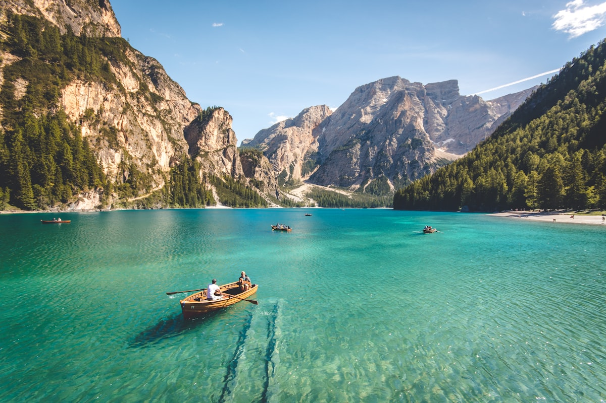

Descanso Well Drilling & Pump Service
Expert Well Services for Descanso & the Cuyamaca Mountains
SC By SCWS Team | February 1, 2026 • 12 min read
"Descanso" means rest in Spanish, and the name captures this mountain community perfectly. At 3,500 feet elevation in the Cuyamaca foothills, Descanso offers what the Spanish settlers recognized centuries ago—a place of peace and natural beauty where tall pines replace coastal chaparral and summer heat gives way to cool mountain air. Today's Descanso residents choose this lifestyle deliberately, trading suburban convenience for mountain independence. That independence starts with reliable well water, and at Southern California Well Service, we've been helping Descanso property owners maintain their water self-sufficiency since 1987.
Mountain well systems face challenges that valley dwellers never consider. Hard freezes crack exposed pipes. Lightning storms fry electrical components. Summer droughts stress fractured granite aquifers. And when wildfires sweep through—as they have repeatedly in Descanso's history—well systems need rebuilding alongside homes. We understand these mountain realities because we've been drilling and servicing Descanso wells through every drought, fire, and freeze cycle for nearly four decades.
📞 Descanso Well Service: (760) 440-8520
Emergency service throughout Descanso, Guatay, Cuyamaca & the mountain backcountry.
Complete Well Services for Descanso Properties
Descanso's mountain location creates specific well challenges that require specialized expertise. Our comprehensive services address every aspect of mountain well ownership—from new drilling through freeze protection and fire recovery.
Well Drilling in Descanso
Planning to drill a new well on your Descanso property? Our well drilling services include complete turnkey installation from initial geological assessment through final system commissioning with proper winterization. We've drilled throughout the Descanso area for decades and understand the local geology intimately.
Descanso's geology features primarily fractured granite and metamorphic bedrock of the Peninsular Ranges. Unlike sedimentary aquifers in lower elevations, mountain groundwater flows through fractures in crystalline rock. Well productivity depends on intersecting productive fracture zones—a task where our extensive local drilling experience proves invaluable. We maintain records of Descanso-area wells and use this knowledge to optimize drilling locations and depth estimates.
Mountain drilling also presents logistical challenges. Steep roads, remote locations, and limited access require equipment designed for backcountry conditions. Our drilling rigs are specifically equipped for mountain work, and we carefully plan access and staging before commencing each project.
Turnkey well installations in Descanso typically range from $25,000 to $45,000 depending on required depth, geology encountered, and site accessibility. For comprehensive pricing information, review our guide to well drilling costs in San Diego County.
Well Pump Repair & Replacement
When your pump fails in Descanso's remote mountain setting, you need service from professionals who respond quickly and come prepared. Our pump repair services cover all submersible and jet pump systems with emergency service available throughout the mountain region. Common Descanso pump issues include:
- Complete pump failure requiring replacement
- Freeze damage to pressure tanks and exposed components
- Lightning damage to control boxes and motors
- Declining pressure from aging pumps
- Pump cycling issues from failed pressure tanks
- Sediment damage from fractured rock formations
- Undersized pumps for modern household demands
Many Descanso properties have wells drilled decades ago with original equipment that's exceeded its design life. We provide honest assessment of whether repair or replacement makes better economic sense, considering both immediate costs and long-term reliability.

Winterization Services
Descanso regularly experiences freezing temperatures during winter months, with overnight lows often dropping into the 20s and occasionally single digits. Proper winterization protects your well system from costly freeze damage:
- Pressure tank and exposed pipe insulation
- Heat tape installation on vulnerable components
- Pump house heating systems
- Buried pipe depth verification (below frost line)
- Wellhead protection and insulation
- Annual winterization inspections before cold weather
We recommend scheduling winterization service in early fall before the first hard freeze. Preventing freeze damage is far less expensive than repairing burst pipes, cracked pressure tanks, and damaged equipment after the fact.
Fire Recovery Well Services
Descanso has experienced devastating wildfires, including the 2003 Cedar Fire that burned through the region. If you're rebuilding after a fire or purchasing a fire-damaged property, we can assess existing wells, replace damaged surface components, or drill new wells as needed. Fortunately, the well itself—the casing, pump, and water source underground—typically survives fires intact. It's the surface infrastructure that needs restoration:
- Wellhead and seal replacement
- Electrical panel and control box replacement
- Pressure tank and piping replacement
- Pump house reconstruction
- Water quality testing after fire events
- Complete system evaluation and commissioning
Water Quality Testing & Treatment
Descanso groundwater from fractured granite formations is generally excellent quality with natural filtration through rock. However, some properties encounter specific issues. We provide comprehensive water quality testing and treatment solutions for:
- Hard water causing scale buildup
- Iron and manganese staining
- Occasional bacteria requiring UV disinfection
- Low pH (acidic water) affecting copper pipes
- Sediment from fractured bedrock
We recommend baseline testing for all new wells and periodic retesting every 2-3 years, or after any fire events that might affect groundwater quality.
Understanding Descanso's Geology & Groundwater
Descanso sits in the Laguna/Cuyamaca mountain region at elevations ranging from 3,000 to 4,000+ feet. Understanding this geology is essential for successful well drilling and realistic expectations about well performance.
Mountain Granite Aquifers
Like most of San Diego's backcountry, Descanso's groundwater flows through fractures in granite and metamorphic bedrock rather than through porous sedimentary layers. This fractured rock geology has both advantages and challenges. The advantages include excellent natural water quality and protection from surface contamination. The challenges include variable well yields depending on fracture patterns and greater sensitivity to drought conditions.
The good news for Descanso: mountain areas often receive better recharge from higher annual rainfall and occasional snow. Descanso typically receives 20-25 inches of precipitation annually, significantly more than coastal San Diego's 10-12 inches. This enhanced recharge helps maintain groundwater supplies, though multi-year droughts still impact water tables.
Typical Descanso Well Depths by Area
- Central Descanso (Highway 79): 300-450 feet
- Guatay: 350-500 feet
- Viejas Grade area: 300-450 feet
- Boulder Creek Road: 350-500 feet
- Higher elevations toward Cuyamaca: 400-550 feet
- Oak Grove / eastern Descanso: 400-500 feet
Note: These are typical ranges based on extensive drilling experience. Your specific property may vary based on precise location, elevation, and local fracture patterns. Free site assessments include review of neighboring well data.
Learn more about well depth considerations in our detailed guide explaining how deep wells should be in San Diego County based on local geology.
Descanso Local Tip
Mountain storms can knock out power for extended periods, and your well pump won't run without electricity. Consider installing a generator transfer switch so you can power your well during outages. Many Descanso property owners also install gravity-fed storage tanks for backup water supply during power failures.
Common Well Challenges in Descanso
After decades serving Descanso properties, we've identified the most frequent well challenges mountain property owners face:
Freeze Damage
The most common preventable problem we see in Descanso is freeze damage. When temperatures drop below freezing, exposed pipes, pressure tanks, and pump equipment can freeze and burst. Damage ranges from minor pipe cracks to complete pressure tank failures and control box destruction. Proper winterization—including insulation, heat tape, and enclosed pump houses—prevents these expensive repairs entirely.
Power Outages
Mountain storms regularly knock out power to Descanso properties, sometimes for days. Without electricity, your well pump won't operate. We help property owners prepare for outages with generator transfer switches, battery backup systems for critical components, and gravity-fed storage tanks that provide water even when the power is out.
Drought Impacts
Descanso's fractured bedrock aquifers are sensitive to extended drought. While mountain areas receive more precipitation than the coast, multi-year droughts still stress groundwater supplies. Wells drilled during wet periods may struggle during extended dry cycles. We design wells with drought resilience in mind and can evaluate options for wells experiencing declining production.
Lightning Damage
Summer thunderstorms are common in the Descanso mountains, and lightning strikes near wells can damage electrical components including pump control boxes, pressure switches, and even pump motors. Surge protection helps, though direct or very close strikes can still cause damage. We recommend annual inspection of electrical components, particularly after major storms.

Why Choose Mountain Well Experts?
Descanso's remote location and demanding conditions require well service providers with specific expertise and equipment. Here's why mountain property owners choose us:
🏔️ Mountain Drilling Expertise
We've drilled throughout Descanso and the Cuyamaca region for decades. We understand fractured granite geology, typical depths, and the specific challenges of mountain well systems.
❄️ Winterization Specialists
We know how to protect well systems from Descanso's freezing winters. Proper winterization prevents costly damage and ensures reliable water year-round.
🔥 Fire Recovery Experience
We've helped Descanso property owners rebuild after multiple fire events. We understand fire damage assessment and system restoration.
⚡ Emergency Response
We respond to Descanso emergencies quickly with equipment designed for mountain access. Losing water in a remote location is serious—we treat it that way.
Serving All of Descanso & Surrounding Areas
We provide comprehensive well services throughout Descanso and the greater Cuyamaca mountain region including:
- Descanso proper – Highway 79 corridor and surrounding properties
- Guatay – East of Descanso on Old Highway 80
- Cuyamaca area – Properties near Cuyamaca Rancho State Park
- Pine Valley – I-8 corridor community to the south
- Boulder Creek Road – Rural properties throughout
- Viejas Grade – Transition zone from Alpine
- Oak Grove – Eastern Descanso area
We also serve neighboring communities including Alpine, Julian, and the entire East County mountain region.
Frequently Asked Questions
How deep are wells in Descanso, CA?
Wells in Descanso typically range from 300 to 550 feet deep, with most residential wells falling between 350-500 feet. Depth varies based on elevation and local fracture patterns, with higher elevation properties often requiring deeper drilling.
How much does it cost to drill a well in Descanso?
Well drilling in Descanso typically costs between $25,000 and $45,000 for a complete turnkey installation. Mountain access challenges and hard granite geology can increase costs. Our free site assessment provides an accurate estimate for your specific property.
Do wells freeze in Descanso during winter?
The groundwater itself stays above freezing, but exposed pipes, pressure tanks, and pump houses are vulnerable to Descanso's freezing temperatures. Proper winterization with insulation, heat tape, and enclosed pump houses is essential to prevent costly freeze damage.
Can you help rebuild after a wildfire?
Yes. We've helped many Descanso property owners restore water systems after fire damage. The well and pump underground typically survive—we replace damaged surface infrastructure and test the complete system.
Is Descanso well water safe to drink?
Descanso well water from fractured granite aquifers is generally excellent quality. Some properties experience moderate hardness or occasional iron. We recommend baseline testing for all wells and periodic retesting every 2-3 years.
What areas around Descanso do you serve?
We serve all of Descanso plus Guatay, Pine Valley, Cuyamaca, Alpine, Julian, and throughout the East County mountain region. Our equipment and expertise are designed for mountain drilling conditions.
How often should I service my Descanso well?
We recommend annual inspections, ideally in early fall before winter freezing or early spring after winter. Include winterization checks before cold weather, water quality testing every 2-3 years, and pressure system inspection.
Do you provide emergency service to Descanso?
Yes, we provide emergency well and pump repair services throughout Descanso and the mountain communities. We understand that losing water in a remote location is serious and respond accordingly.
Protect Your Descanso Property's Water Independence
Living in Descanso means embracing mountain life—the beauty, the peace, and the self-reliance. Your well is the foundation of that independence, providing water without monthly bills or reliance on distant infrastructure. Whether you need a new well drilled, emergency pump service, winterization, or expert advice on your water system, Southern California Well Service brings nearly four decades of mountain well expertise to every Descanso project.
Curious about the long-term benefits of well ownership? Read our comparison of well water vs city water in California. Concerned about your pump's performance? Review our guide to signs your well pump is failing.
Get Your Free Descanso Well Assessment
Whether you need a new well drilled, pump repair, winterization service, or professional evaluation of your current system, we provide complimentary site assessments throughout Descanso and the mountain communities. Our assessment includes geological analysis, review of neighboring well data, and honest recommendations for your specific property and needs.